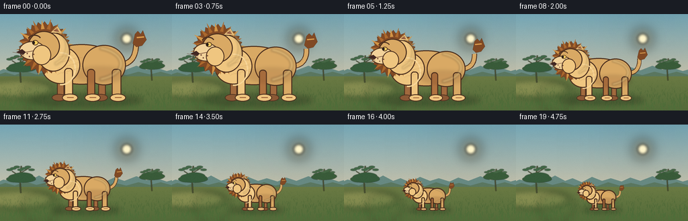
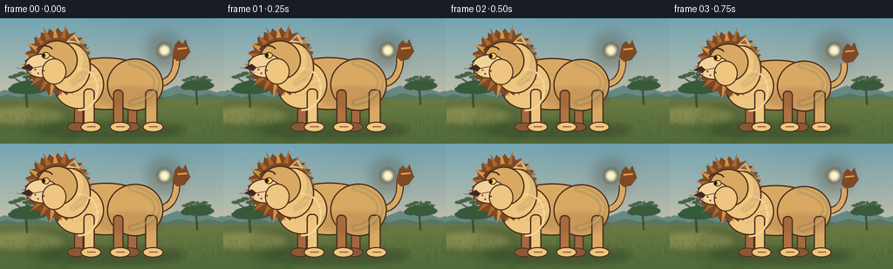
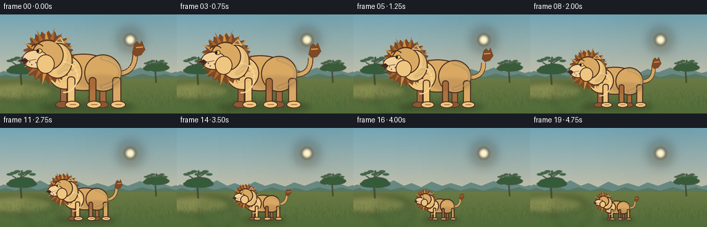
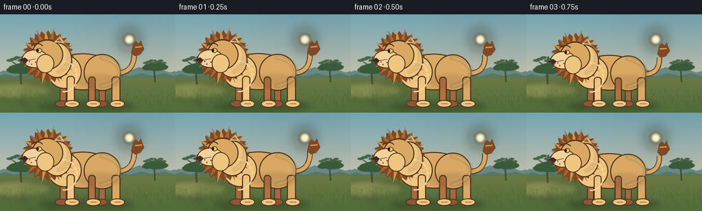
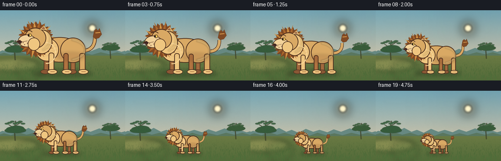
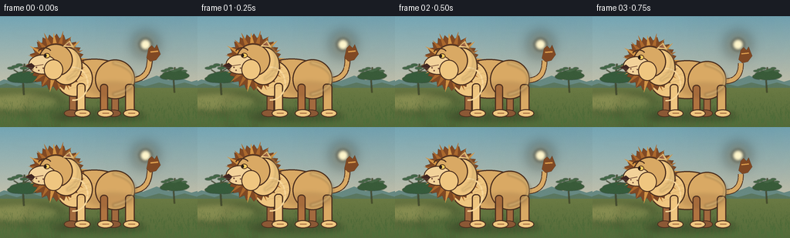

CODING AGENTS AS PIXEL WORLD MODELS
traex/DeepSeek-V4.1-Flash · instance_preservation_0052
点击播放 · 原生 RGB 像素
逐轮保存的候选
回放视频、检查图与代码变化。
每份候选均可单独播放。实际图片检查记录在下方工具轨迹中。
候选 01播放与检查图
点击播放 · 原生 RGB 像素


展开代码变化
--- 上一保存版本
+++ 本次保存版本
@@ -0,0 +1,489 @@
+from __future__ import annotations
+
+import math
+from pathlib import Path
+
+import numpy as np
+from PIL import Image, ImageDraw, ImageFilter
+
+import artifact_io
+
+
+WIDTH = 256
+HEIGHT = 144
+FRAMES = 20
+SS = 4
+W = WIDTH * SS
+H = HEIGHT * SS
+CASE_DIR = Path(__file__).resolve().parent
+
+
+def smoothstep(value: float) -> float:
+ value = max(0.0, min(1.0, value))
+ return value * value * (3.0 - 2.0 * value)
+
+
+def rgba(color: tuple[int, int, int], alpha: int = 255) -> tuple[int, int, int, int]:
+ return (*color, alpha)
+
+
+def vertical_gradient(top: tuple[int, int, int], bottom: tuple[int, int, int]) -> Image.Image:
+ ramp = np.linspace(0.0, 1.0, H, dtype=np.float32)[:, None]
+ top_color = np.asarray(top, dtype=np.float32)
+ bottom_color = np.asarray(bottom, dtype=np.float32)
+ row = top_color[None, :] * (1.0 - ramp) + bottom_color[None, :] * ramp
+ pixels = np.repeat(row[:, None, :], W, axis=1)
+ return Image.fromarray(np.clip(pixels, 0, 255).astype(np.uint8))
+
+
+def soft_ellipse(
+ layer: Image.Image,
+ box: tuple[float, float, float, float],
+ fill: tuple[int, int, int, int],
+ blur: float = 0.0,
+) -> None:
+ overlay = Image.new("RGBA", layer.size, (0, 0, 0, 0))
+ ImageDraw.Draw(overlay).ellipse(box, fill=fill)
+ if blur:
+ overlay = overlay.filter(ImageFilter.GaussianBlur(blur))
+ layer.alpha_composite(overlay)
+
+
+def make_acacia(
+ draw: ImageDraw.ImageDraw,
+ x: float,
+ y: float,
+ scale: float,
+ trunk: tuple[int, int, int],
+ leaves: tuple[int, int, int],
+) -> None:
+ tw = max(2, round(5 * scale))
+ draw.line(
+ [(x, y), (x - 3 * scale, y - 54 * scale), (x + 2 * scale, y - 96 * scale)],
+ fill=trunk,
+ width=tw,
+ joint="curve",
+ )
+ draw.line(
+ [(x - 1 * scale, y - 58 * scale), (x - 31 * scale, y - 77 * scale)],
+ fill=trunk,
+ width=max(1, round(3 * scale)),
+ )
+ draw.line(
+ [(x + 1 * scale, y - 72 * scale), (x + 30 * scale, y - 89 * scale)],
+ fill=trunk,
+ width=max(1, round(3 * scale)),
+ )
+ crowns = [
+ (x - 36, y - 82, 28, 11),
+ (x - 15, y - 92, 35, 13),
+ (x + 11, y - 98, 38, 14),
+ (x + 39, y - 87, 28, 11),
+ (x + 1, y - 82, 52, 12),
+ ]
+ for cx, cy, rx, ry in crowns:
+ draw.ellipse(
+ (cx - rx * scale, cy - ry * scale, cx + rx * scale, cy + ry * scale),
+ fill=leaves,
+ )
+ for i in range(7):
+ cx = x + (-40 + i * 13) * scale
+ cy = y - (82 + (i % 3) * 5) * scale
+ draw.ellipse(
+ (cx - 11 * scale, cy - 4 * scale, cx + 11 * scale, cy + 4 * scale),
+ fill=tuple(min(255, c + 12) for c in leaves[:3]) + (255,),
+ )
+
+
+def build_background() -> Image.Image:
+ image = vertical_gradient((116, 166, 181), (244, 210, 167)).convert("RGBA")
+
+ # Warm sun and its atmospheric glow.
+ glow = Image.new("RGBA", (W, H), (0, 0, 0, 0))
+ soft_ellipse(glow, (655, 50, 855, 250), (255, 224, 154, 90), blur=50 * SS)
+ soft_ellipse(glow, (704, 97, 804, 197), (255, 235, 177, 220), blur=9 * SS)
+ soft_ellipse(glow, (724, 117, 784, 177), (255, 246, 204, 255), blur=2 * SS)
+ image.alpha_composite(glow)
+
+ # Long, quiet clouds echo the horizontal savanna bands.
+ clouds = Image.new("RGBA", (W, H), (0, 0, 0, 0))
+ cloud_draw = ImageDraw.Draw(clouds)
+ cloud_shapes = [
+ (18, 18, 60, 25, 3.5, 6, 105),
+ (58, 26, 97, 32, 2.5, 5, 74),
+ (135, 15, 175, 21, 2.0, 4, 62),
+ (149, 33, 193, 38, 2.0, 4, 58),
+ ]
+ for x0, y0, x1, y1, r, a, blur in cloud_shapes:
+ cloud_draw.rounded_rectangle(
+ (x0 * SS, y0 * SS, x1 * SS, y1 * SS),
+ radius=r * SS,
+ fill=(255, 244, 224, a),
+ )
+ clouds = clouds.filter(ImageFilter.GaussianBlur(3.0 * SS))
+ image.alpha_composite(clouds)
+
+ # Layered distant hills.
+ draw = ImageDraw.Draw(image)
+ far = [
+ (-8, 88), (5, 82), (18, 85), (32, 78), (45, 83),
+ (58, 76), (73, 84), (84, 80), (98, 86), (113, 78),
+ (128, 84), (141, 80), (157, 85), (170, 79), (185, 84),
+ (203, 77), (218, 83), (233, 80), (248, 85), (262, 81),
+ ]
+ far_poly = [(x * SS, y * SS) for x, y in far] + [(W, 370 * SS), (0, 370 * SS)]
+ draw.polygon(far_poly, fill=(103, 137, 130, 255))
+
+ middle = [
+ (-8, 92), (8, 87), (22, 91), (38, 85), (54, 90),
+ (70, 86), (87, 91), (103, 87), (120, 92), (137, 86),
+ (154, 91), (171, 87), (188, 91), (206, 86), (223, 90),
+ (239, 86), (258, 91),
+ ]
+ middle_poly = [(x * SS, y * SS) for x, y in middle] + [(W, 101 * SS), (0, 101 * SS)]
+ draw.polygon(middle_poly, fill=(90, 119, 96, 255))
+
+ # A broad gold-green plain.
+ draw.rectangle((0, 93 * SS, W - 1, H - 1), fill=(133, 141, 86, 255))
+ ground = vertical_gradient((151, 151, 86), (83, 107, 58))
+ ground_mask = Image.new("L", (W, H), 0)
+ ImageDraw.Draw(ground_mask).rectangle((0, 93 * SS, W - 1, H - 1), fill=255)
+ image.paste(ground.convert("RGBA"), (0, 0), ground_mask)
+
+ # Broad tonal bands keep the ground from looking like a flat backdrop.
+ bands = Image.new("RGBA", (W, H), (0, 0, 0, 0))
+ soft_ellipse(bands, (-24 * SS, 98 * SS, 78 * SS, 125 * SS), (202, 186, 112, 85), blur=4.5 * SS)
+ soft_ellipse(bands, (32 * SS, 101 * SS, 88 * SS, 144 * SS), (74, 105, 54, 64), blur=5.5 * SS)
+ image.alpha_composite(bands)
+
+ # Acacia silhouettes anchor the savanna without crowding the central action.
+ tree_layer = Image.new("RGBA", (W, H), (0, 0, 0, 0))
+ tree_draw = ImageDraw.Draw(tree_layer)
+ make_acacia(tree_draw, 31 * SS, 102 * SS, 0.42 * SS, (72, 79, 50, 255), (54, 91, 59, 255))
+ make_acacia(tree_draw, 226 * SS, 99 * SS, 0.34 * SS, (76, 80, 48, 255), (57, 91, 57, 255))
+ image.alpha_composite(tree_layer.filter(ImageFilter.GaussianBlur(0.35 * SS)))
+
+ # Grass is denser near the camera and sparse at the horizon.
+ grass = Image.new("RGBA", (W, H), (0, 0, 0, 0))
+ grass_draw = ImageDraw.Draw(grass)
+ rng = np.random.default_rng(19)
+ for _ in range(720):
+ x = rng.uniform(0, W)
+ depth = rng.random()
+ y = (100 + depth * 44) * SS
+ length = (1.3 + depth * 5.0) * SS
+ lean = rng.uniform(-1.4, 1.4) * SS
+ alpha = int(72 + depth * 85)
+ color = (49 + int(depth * 28), 79 + int(depth * 35), 40 + int(depth * 19), alpha)
+ grass_draw.line([(x, y), (x + lean, y - length)], fill=color, width=max(1, round(depth * 1.4 * SS)))
+ image.alpha_composite(grass)
+
+ # Fine grain softens the vector shapes and gives the illustration a print-like finish.
+ arr = np.asarray(image.convert("RGB"), dtype=np.float32)
+ grain = rng.normal(0.0, 2.1, (H, W, 1)).astype(np.float32)
+ arr = np.clip(arr + grain, 0, 255).astype(np.uint8)
+ return Image.fromarray(arr, "RGB").convert("RGBA")
+
+
+def bezier_points(
+ p0: tuple[float, float],
+ p1: tuple[float, float],
+ p2: tuple[float, float],
+ count: int = 26,
+) -> list[tuple[float, float]]:
+ points = []
+ for i in range(count):
+ t = i / (count - 1)
+ x = (1 - t) ** 2 * p0[0] + 2 * (1 - t) * t * p1[0] + t * t * p2[0]
+ y = (1 - t) ** 2 * p0[1] + 2 * (1 - t) * t * p1[1] + t * t * p2[1]
+ points.append((x, y))
+ return points
+
+
+def transform_points(
+ points: list[tuple[float, float]],
+ ox: float,
+ oy: float,
+ scale: float,
+) -> list[tuple[float, float]]:
+ return [(ox + x * scale, oy + y * scale) for x, y in points]
+
+
+def ellipse_box(cx: float, cy: float, rx: float, ry: float, ox: float, oy: float, scale: float):
+ return (
+ ox + (cx - rx) * scale,
+ oy + (cy - ry) * scale,
+ ox + (cx + rx) * scale,
+ oy + (cy + ry) * scale,
+ )
+
+
+def draw_lion(frame: Image.Image, frame_index: int) -> None:
+ t = frame_index / (FRAMES - 1)
+ eased = smoothstep(t)
+ scale = 1.08 - 0.69 * eased
+ breath = 1.0 + 0.012 * math.sin(2.0 * math.pi * t * 2.0)
+ scale *= breath
+ ox, oy = 128.0 * SS, 127.0 * SS
+ s = scale * SS
+
+ # The shadow follows the subject's footprint, making the scale change unmistakable.
+ shadow = Image.new("RGBA", frame.size, (0, 0, 0, 0))
+ shadow_draw = ImageDraw.Draw(shadow)
+ shadow_draw.ellipse(
+ ellipse_box(-1, 1.5, 79, 8, ox, oy, s),
+ fill=(37, 46, 29, 95),
+ )
+ shadow_draw.ellipse(
+ ellipse_box(-4, 1.0, 48, 4, ox, oy, s),
+ fill=(30, 38, 25, 72),
+ )
+ frame.alpha_composite(shadow.filter(ImageFilter.GaussianBlur(4.0 * SS)))
+
+ lion = Image.new("RGBA", frame.size, (0, 0, 0, 0))
+ d = ImageDraw.Draw(lion)
+
+ outline = max(1.6 * SS, 1.15 * s)
+ ink = (76, 48, 31, 255)
+ deep_mane = (128, 73, 36, 255)
+ mane = (171, 104, 45, 255)
+ mane_light = (211, 148, 69, 255)
+ body_shadow = (176, 115, 64, 255)
+ body = (217, 169, 100, 255)
+ body_light = (239, 198, 128, 255)
+ muzzle = (242, 210, 154, 255)
+
+ # Tail first, with a gentle sway that persists through the size change.
+ sway = math.sin(2.0 * math.pi * t * 1.35 - 0.5) * 5.5
+ tail_points = bezier_points(
+ (42, -47),
+ (70, -46 + sway * 0.25),
+ (69, -76 + sway),
+ count=30,
+ )
+ tp = transform_points(tail_points, ox, oy, s)
+ d.line(tp, fill=ink, width=max(2, round(8.0 * s)), joint="curve")
+ d.line(tp, fill=body, width=max(1, round(5.8 * s)), joint="curve")
+ tuft = [
+ (65, -77), (68, -90), (72, -94), (76, -90), (79, -95),
+ (82, -87), (84, -82), (78, -74), (70, -72),
+ ]
+ tuft = [(ox + x * s + sway * s * 0.22, oy + y * s) for x, y in tuft]
+ d.polygon(tuft, fill=deep_mane, outline=ink)
+ d.line(
+ [(ox + 70 * s, oy + -85 * s), (ox + 80 * s, oy + -86 * s)],
+ fill=(220, 157, 77, 255),
+ width=max(1, round(2.0 * s)),
+ )
+
+ # Far legs sit behind the torso and read as a darker layer.
+ far_leg = (162, 106, 62, 255)
+ for cx, width in ((22, 10), (-35, 10)):
+ d.rounded_rectangle(
+ (
+ ox + (cx - width / 2) * s,
+ oy - 48 * s,
+ ox + (cx + width / 2) * s,
+ oy - 4 * s,
+ ),
+ radius=4 * s,
+ fill=far_leg,
+ outline=ink,
+ width=max(1, round(outline * 0.75)),
+ )
+ d.ellipse(ellipse_box(cx - 2, -2.0, 10, 5, ox, oy, s), fill=(139, 88, 53, 255), outline=ink, width=max(1, round(outline * 0.65)))
+
+ # Torso: broad chest and rounded hindquarters.
+ d.ellipse(ellipse_box(-6, -48, 52, 28, ox, oy, s), fill=body, outline=ink, width=max(1, round(outline)))
+ d.ellipse(ellipse_box(-35, -47, 27, 26, ox, oy, s), fill=body_light, outline=ink, width=max(1, round(outline)))
+ d.ellipse(ellipse_box(25, -47, 30, 28, ox, oy, s), fill=body, outline=ink, width=max(1, round(outline)))
+
+ # Near legs and paws.
+ for cx, top, width, shade in (
+ (-24, -43, 12, body_light),
+ (42, -42, 13, body),
+ (7, -42, 11, body_shadow),
+ ):
+ d.rounded_rectangle(
+ (
+ ox + (cx - width / 2) * s,
+ oy + top * s,
+ ox + (cx + width / 2) * s,
+ oy - 3 * s,
+ ),
+ radius=5 * s,
+ fill=shade,
+ outline=ink,
+ width=max(1, round(outline * 0.9)),
+ )
+ d.ellipse(ellipse_box(cx + 2, -2.0, 11, 5.5, ox, oy, s), fill=body_light, outline=ink, width=max(1, round(outline * 0.75)))
+ d.line(
+ [(ox + (cx - 2) * s, oy - 2.2 * s), (ox + (cx + 7) * s, oy - 2.2 * s)],
+ fill=(150, 91, 52, 255),
+ width=max(1, round(1.1 * s)),
+ )
+
+ # Tail shadow along the lower back.
+ soft_ellipse(
+ lion,
+ ellipse_box(20, -34, 35, 10, ox, oy, s),
+ (125, 74, 42, 48),
+ blur=3.0 * s,
+ )
+
+ # A star-like mane silhouette, with alternating warm tufts.
+ mane_poly = []
+ for i in range(48):
+ angle = 2.0 * math.pi * i / 48
+ outer = 35.5 if i % 2 == 0 else 30.5
+ if math.sin(angle) > 0.55:
+ outer += 2.0
+ x = -57 + math.cos(angle) * outer
+ y = -72 + math.sin(angle) * outer
+ mane_poly.append((ox + x * s, oy + y * s))
+ d.polygon(mane_poly, fill=deep_mane, outline=ink)
+
+ # Mane tufts give the silhouette a lion-specific edge at every scale.
+ for i in range(20):
+ angle = 2.0 * math.pi * i / 20 - 0.10
+ a0 = angle - 0.10
+ a1 = angle + 0.10
+ outer = 37.0 + (2.5 if i % 2 == 0 else 0.0)
+ pts = [
+ (ox + (-57 + math.cos(a0) * 25) * s, oy + (-72 + math.sin(a0) * 25) * s),
+ (ox + (-57 + math.cos(angle) * outer) * s, oy + (-72 + math.sin(angle) * outer) * s),
+ (ox + (-57 + math.cos(a1) * 25) * s, oy + (-72 + math.sin(a1) * 25) * s),
+ ]
+ d.polygon(pts, fill=mane_light if i % 3 == 0 else mane)
+
+ # Neck and face.
+ d.ellipse(ellipse_box(-45, -65, 23, 27, ox, oy, s), fill=body_light, outline=ink, width=max(1, round(outline)))
+ d.ellipse(ellipse_box(-58, -73, 22, 21, ox, oy, s), fill=body, outline=ink, width=max(1, round(outline)))
+
+ # Ear, muzzle, cheek, and nose in profile.
+ ear = [
+ (ox + -49 * s, oy + -92 * s),
+ (ox + -39 * s, oy + -101 * s),
+ (ox + -33 * s, oy + -91 * s),
+ ]
+ d.polygon(ear, fill=body_light, outline=ink)
+ d.polygon(
+ [
+ (ox + -45 * s, oy + -94 * s),
+ (ox + -40 * s, oy + -98 * s),
+ (ox + -37 * s, oy + -93 * s),
+ ],
+ fill=(146, 82, 60, 255),
+ )
+ d.ellipse(ellipse_box(-74, -67, 18, 13, ox, oy, s), fill=muzzle, outline=ink, width=max(1, round(outline * 0.85)))
+ d.ellipse(ellipse_box(-61, -61, 13, 14, ox, oy, s), fill=body_light, outline=ink, width=max(1, round(outline * 0.72)))
+ d.polygon(
+ [
+ (ox + -88 * s, oy + -69 * s),
+ (ox + -96 * s, oy + -65 * s),
+ (ox + -87 * s, oy + -61 * s),
+ (ox + -83 * s, oy + -65 * s),
+ ],
+ fill=(66, 39, 34, 255),
+ outline=ink,
+ )
+
+ # Eye and brow remain legible even in the final small pose.
+ eye_y = -78
+ blink = 0.12 if frame_index in (9, 10) else 1.0
+ d.ellipse(
+ ellipse_box(-70, eye_y, 4.3, 3.5 * blink, ox, oy, s),
+ fill=(250, 204, 94, 255),
+ outline=ink,
+ width=max(1, round(1.0 * s)),
+ )
+ d.ellipse(
+ ellipse_box(-72, eye_y, 1.6, max(0.7, 2.2 * blink), ox, oy, s),
+ fill=(37, 28, 23, 255),
+ )
+ d.arc(
+ ellipse_box(-71, -83, 9, 6, ox, oy, s),
+ start=188,
+ end=342,
+ fill=ink,
+ width=max(1, round(1.6 * s)),
+ )
+ d.line(
+ [(ox + -83 * s, oy + -65 * s), (ox + -72 * s, oy + -67 * s)],
+ fill=(101, 60, 42, 255),
+ width=max(1, round(1.0 * s)),
+ )
+
+ # Whisker dots and two fine whiskers.
+ for wx, wy in ((-81, -63), (-78, -59), (-72, -62)):
+ d.ellipse(ellipse_box(wx, wy, 0.9, 0.9, ox, oy, s), fill=(113, 72, 54, 255))
+ for start, end in (
+ ((-85, -62), (-101, -65)),
+ ((-85, -60), (-100, -56)),
+ ):
+ d.line(
+ [(ox + start[0] * s, oy + start[1] * s), (ox + end[0] * s, oy + end[1] * s)],
+ fill=(105, 75, 57, 220),
+ width=max(1, round(0.75 * s)),
+ )
+
+ # Chest ruff and warm rim light reinforce the beige fur.
+ d.arc(
+ ellipse_box(-34, -42, 20, 23, ox, oy, s),
+ start=265,
+ end=95,
+ fill=(248, 214, 153, 255),
+ width=max(1, round(2.0 * s)),
+ )
+ rim = Image.new("RGBA", lion.size, (0, 0, 0, 0))
+ rim_draw = ImageDraw.Draw(rim)
+ rim_draw.arc(
+ ellipse_box(4, -49, 46, 25, ox, oy, s),
+ start=290,
+ end=70,
+ fill=(255, 223, 151, 118),
+ width=max(1, round(4.0 * s)),
+ )
+ rim_draw.arc(
+ ellipse_box(-55, -73, 31, 29, ox, oy, s),
+ start=292,
+ end=65,
+ fill=(255, 213, 131, 92),
+ width=max(1, round(4.0 * s)),
+ )
+ lion.alpha_composite(rim.filter(ImageFilter.GaussianBlur(1.5 * s)))
+
+ # A restrained fur texture, only on the large opening frames.
+ if scale > 0.72:
+ texture = Image.new("RGBA", lion.size, (0, 0, 0, 0))
+ tex = ImageDraw.Draw(texture)
+ for i in range(14):
+ y = -32 - i * 1.9
+ x = -31 + (i % 4) * 7
+ tex.arc(
+ ellipse_box(x, y, 9, 5, ox, oy, s),
+ start=196,
+ end=315,
+ fill=(141, 87, 49, 35),
+ width=max(1, round(0.8 * s)),
+ )
+ lion.alpha_composite(texture)
+
+ frame.alpha_composite(lion)
+
+
+def render() -> np.ndarray:
+ background = build_background()
+ frames = []
+ for index in range(FRAMES):
+ frame = background.copy()
+ draw_lion(frame, index)
+ small = frame.convert("RGB").resize((WIDTH, HEIGHT), Image.Resampling.LANCZOS)
+ frames.append(np.asarray(small, dtype=np.uint8))
+ return np.stack(frames)
+
+
+if __name__ == "__main__":
+ result = render()
+ artifact_io.save(result, CASE_DIR)
+ print(f"saved {result.shape} to {CASE_DIR}")
候选 02播放与检查图
点击播放 · 原生 RGB 像素


展开代码变化
--- 上一保存版本
+++ 本次保存版本
@@ -182,7 +182,7 @@
arr = np.asarray(image.convert("RGB"), dtype=np.float32)
grain = rng.normal(0.0, 2.1, (H, W, 1)).astype(np.float32)
arr = np.clip(arr + grain, 0, 255).astype(np.uint8)
- return Image.fromarray(arr, "RGB").convert("RGBA")
+ return Image.fromarray(arr).convert("RGBA")
def bezier_points(
@@ -221,21 +221,21 @@
def draw_lion(frame: Image.Image, frame_index: int) -> None:
t = frame_index / (FRAMES - 1)
eased = smoothstep(t)
- scale = 1.08 - 0.69 * eased
+ scale = 1.00 - 0.64 * eased
breath = 1.0 + 0.012 * math.sin(2.0 * math.pi * t * 2.0)
scale *= breath
- ox, oy = 128.0 * SS, 127.0 * SS
+ ox, oy = 127.0 * SS, 133.0 * SS
s = scale * SS
# The shadow follows the subject's footprint, making the scale change unmistakable.
shadow = Image.new("RGBA", frame.size, (0, 0, 0, 0))
shadow_draw = ImageDraw.Draw(shadow)
shadow_draw.ellipse(
- ellipse_box(-1, 1.5, 79, 8, ox, oy, s),
+ ellipse_box(-1, 1.5, 70, 7, ox, oy, s),
fill=(37, 46, 29, 95),
)
shadow_draw.ellipse(
- ellipse_box(-4, 1.0, 48, 4, ox, oy, s),
+ ellipse_box(-4, 1.0, 43, 3.5, ox, oy, s),
fill=(30, 38, 25, 72),
)
frame.alpha_composite(shadow.filter(ImageFilter.GaussianBlur(4.0 * SS)))
@@ -294,9 +294,9 @@
d.ellipse(ellipse_box(cx - 2, -2.0, 10, 5, ox, oy, s), fill=(139, 88, 53, 255), outline=ink, width=max(1, round(outline * 0.65)))
# Torso: broad chest and rounded hindquarters.
- d.ellipse(ellipse_box(-6, -48, 52, 28, ox, oy, s), fill=body, outline=ink, width=max(1, round(outline)))
- d.ellipse(ellipse_box(-35, -47, 27, 26, ox, oy, s), fill=body_light, outline=ink, width=max(1, round(outline)))
- d.ellipse(ellipse_box(25, -47, 30, 28, ox, oy, s), fill=body, outline=ink, width=max(1, round(outline)))
+ d.ellipse(ellipse_box(-6, -49, 46, 27, ox, oy, s), fill=body, outline=ink, width=max(1, round(outline)))
+ d.ellipse(ellipse_box(-33, -49, 25, 25, ox, oy, s), fill=body_light, outline=ink, width=max(1, round(outline)))
+ d.ellipse(ellipse_box(22, -48, 27, 27, ox, oy, s), fill=body, outline=ink, width=max(1, round(outline)))
# Near legs and paws.
for cx, top, width, shade in (
@@ -326,7 +326,7 @@
# Tail shadow along the lower back.
soft_ellipse(
lion,
- ellipse_box(20, -34, 35, 10, ox, oy, s),
+ ellipse_box(18, -35, 31, 9, ox, oy, s),
(125, 74, 42, 48),
blur=3.0 * s,
)
@@ -335,7 +335,7 @@
mane_poly = []
for i in range(48):
angle = 2.0 * math.pi * i / 48
- outer = 35.5 if i % 2 == 0 else 30.5
+ outer = 37.5 if i % 2 == 0 else 31.5
if math.sin(angle) > 0.55:
outer += 2.0
x = -57 + math.cos(angle) * outer
@@ -348,7 +348,7 @@
angle = 2.0 * math.pi * i / 20 - 0.10
a0 = angle - 0.10
a1 = angle + 0.10
- outer = 37.0 + (2.5 if i % 2 == 0 else 0.0)
+ outer = 39.0 + (3.0 if i % 2 == 0 else 0.0)
pts = [
(ox + (-57 + math.cos(a0) * 25) * s, oy + (-72 + math.sin(a0) * 25) * s),
(ox + (-57 + math.cos(angle) * outer) * s, oy + (-72 + math.sin(angle) * outer) * s),
@@ -357,8 +357,8 @@
d.polygon(pts, fill=mane_light if i % 3 == 0 else mane)
# Neck and face.
- d.ellipse(ellipse_box(-45, -65, 23, 27, ox, oy, s), fill=body_light, outline=ink, width=max(1, round(outline)))
- d.ellipse(ellipse_box(-58, -73, 22, 21, ox, oy, s), fill=body, outline=ink, width=max(1, round(outline)))
+ d.ellipse(ellipse_box(-44, -66, 22, 26, ox, oy, s), fill=body_light, outline=ink, width=max(1, round(outline)))
+ d.ellipse(ellipse_box(-58, -74, 23, 22, ox, oy, s), fill=body, outline=ink, width=max(1, round(outline)))
# Ear, muzzle, cheek, and nose in profile.
ear = [
@@ -375,21 +375,21 @@
],
fill=(146, 82, 60, 255),
)
- d.ellipse(ellipse_box(-74, -67, 18, 13, ox, oy, s), fill=muzzle, outline=ink, width=max(1, round(outline * 0.85)))
+ d.ellipse(ellipse_box(-76, -68, 19, 13.5, ox, oy, s), fill=muzzle, outline=ink, width=max(1, round(outline * 0.85)))
d.ellipse(ellipse_box(-61, -61, 13, 14, ox, oy, s), fill=body_light, outline=ink, width=max(1, round(outline * 0.72)))
d.polygon(
[
- (ox + -88 * s, oy + -69 * s),
- (ox + -96 * s, oy + -65 * s),
- (ox + -87 * s, oy + -61 * s),
- (ox + -83 * s, oy + -65 * s),
+ (ox + -91 * s, oy + -70 * s),
+ (ox + -99 * s, oy + -66 * s),
+ (ox + -90 * s, oy + -61 * s),
+ (ox + -86 * s, oy + -66 * s),
],
fill=(66, 39, 34, 255),
outline=ink,
)
# Eye and brow remain legible even in the final small pose.
- eye_y = -78
+ eye_y = -80
blink = 0.12 if frame_index in (9, 10) else 1.0
d.ellipse(
ellipse_box(-70, eye_y, 4.3, 3.5 * blink, ox, oy, s),
@@ -402,24 +402,24 @@
fill=(37, 28, 23, 255),
)
d.arc(
- ellipse_box(-71, -83, 9, 6, ox, oy, s),
+ ellipse_box(-73, -85, 9, 6, ox, oy, s),
start=188,
end=342,
fill=ink,
width=max(1, round(1.6 * s)),
)
d.line(
- [(ox + -83 * s, oy + -65 * s), (ox + -72 * s, oy + -67 * s)],
+ [(ox + -86 * s, oy + -66 * s), (ox + -75 * s, oy + -68 * s)],
fill=(101, 60, 42, 255),
width=max(1, round(1.0 * s)),
)
# Whisker dots and two fine whiskers.
- for wx, wy in ((-81, -63), (-78, -59), (-72, -62)):
+ for wx, wy in ((-84, -64), (-81, -60), (-75, -63)):
d.ellipse(ellipse_box(wx, wy, 0.9, 0.9, ox, oy, s), fill=(113, 72, 54, 255))
for start, end in (
- ((-85, -62), (-101, -65)),
- ((-85, -60), (-100, -56)),
+ ((-88, -63), (-104, -66)),
+ ((-88, -61), (-103, -57)),
):
d.line(
[(ox + start[0] * s, oy + start[1] * s), (ox + end[0] * s, oy + end[1] * s)],
候选 03播放与检查图
点击播放 · 原生 RGB 像素


展开代码变化
--- 上一保存版本
+++ 本次保存版本
@@ -221,21 +221,21 @@
def draw_lion(frame: Image.Image, frame_index: int) -> None:
t = frame_index / (FRAMES - 1)
eased = smoothstep(t)
- scale = 1.00 - 0.64 * eased
+ scale = 0.96 - 0.58 * eased
breath = 1.0 + 0.012 * math.sin(2.0 * math.pi * t * 2.0)
scale *= breath
- ox, oy = 127.0 * SS, 133.0 * SS
+ ox, oy = 128.0 * SS, 128.0 * SS
s = scale * SS
# The shadow follows the subject's footprint, making the scale change unmistakable.
shadow = Image.new("RGBA", frame.size, (0, 0, 0, 0))
shadow_draw = ImageDraw.Draw(shadow)
shadow_draw.ellipse(
- ellipse_box(-1, 1.5, 70, 7, ox, oy, s),
+ ellipse_box(-1, 1.5, 65, 6.5, ox, oy, s),
fill=(37, 46, 29, 95),
)
shadow_draw.ellipse(
- ellipse_box(-4, 1.0, 43, 3.5, ox, oy, s),
+ ellipse_box(-4, 1.0, 40, 3.2, ox, oy, s),
fill=(30, 38, 25, 72),
)
frame.alpha_composite(shadow.filter(ImageFilter.GaussianBlur(4.0 * SS)))
可观测工具轨迹
实际执行的命令与返回图片。
命令 1exit 0
/bin/bash -c "pwd && rg --files -g '"'!*.pyc'"' -g '"'!__pycache__'"' | sed -n '1,200p'"
命令 2exit 0
/bin/bash -c "sed -n '1,240p' GENERATION_RULES.md"
命令 3exit 0
/bin/bash -c "cat task_spec.json && printf '\\n--- prompt.txt ---\\n' && cat prompt.txt"
命令 4exit 0
/bin/bash -c "find . -maxdepth 2 -type f -printf '%p %s bytes\\n' | sort | sed -n '1,240p'"
命令 5exit 0
/bin/bash -c "sed -n '1,260p' artifact_io.py"
命令 6exit 0
/bin/bash -c "python - <<'PY'
import PIL, numpy
print('Pillow', PIL.__version__, 'NumPy', numpy.__version__)
try:
import scipy; print('scipy', scipy.__version__)
except Exception as e: print('scipy unavailable')
PY"命令 7exit 1
/bin/bash -c 'python generate.py'
命令 8exit 1
/bin/bash -c 'python generate.py'
命令 9exit 1
/bin/bash -c 'python generate.py'
命令 10exit 0
/bin/bash -c 'python generate.py'
命令 11exit 127
/bin/bash -c "python - <<'PY'
from PIL import Image
im=Image.open('inspection.png')
im.resize((im.width*2, im.height*2), Image.Resampling.NEAREST).save('.tmp/inspection_2x.png')
PY
file inspection.png transition_check.png .tmp/inspection_2x.png"命令 12exit 0
/bin/bash -c 'command -v chafa || command -v viu || command -v jp2 || command -v img2txt || true'
命令 13exit 0
/bin/bash -c "ls -lh pixels.npz index.html inspection.png transition_check.png frames | sed -n '1,80p'"
命令 14exit 0
/bin/bash -c "python - <<'PY' from PIL import Image import numpy as np for f in ['frames/00.png','frames/05.png','frames/10.png','frames/15.png','frames/19.png']: a=np.asarray(Image.open(f)) print(f, 'mean', a.mean((0,1)).round(1), 'std', a.std().round(1), 'unique',len(np.unique(a.reshape(-1,3),axis=0))) PY"
命令 15exit 0
/bin/bash -c "python - <<'PY'
from PIL import Image, ImageOps, ImageFilter
chars=' .:-=+*#%@'
for f in ['frames/00.png','frames/10.png','frames/19.png']:
im=Image.open(f).convert('L')
# crop central subject region x=10..220 y=5..140, downscale
im=im.resize((64,32), Image.Resampling.BOX)
print('\\n',f)
for row in range(32):
print(''.join(chars[min(9, int(im.getpixel((x,row))/256*10))] for x in range(64)))
PY"命令 16exit 0
/bin/bash -c "python - <<'PY'
from PIL import Image
from collections import Counter
for f in ['frames/00.png','frames/10.png','frames/19.png']:
im=Image.open(f).convert('RGB').resize((128,72),Image.Resampling.BOX)
c=Counter(im.getdata())
print('\\n',f)
for col,n in c.most_common(25): print(col,n)
PY"命令 17exit 0
/bin/bash -c "python - <<'PY'
from PIL import Image
im=Image.open('frames/00.png').convert('RGB')
im.resize((1024,576),Image.Resampling.LANCZOS).save('.tmp/frame00_4x.png')
im=Image.open('frames/19.png').convert('RGB')
im.resize((1024,576),Image.Resampling.LANCZOS).save('.tmp/frame19_4x.png')
PY"命令 18exit 0
/bin/bash -c "python - <<'PY'
import numpy as np
from PIL import Image
import generate
bg=np.asarray(generate.build_background().convert('RGB').resize((256,144),Image.Resampling.LANCZOS)).astype(int)
for i in [0,5,10,15,19]:
a=np.asarray(Image.open(f'frames/{i:02d}.png')).astype(int)
diff=np.max(np.abs(a-bg),axis=2)
ys,xs=np.where(diff>10)
print(i, 'bbox', (xs.min(),ys.min(),xs.max(),ys.max()), 'pixels',len(xs), 'maxdiff',diff.max())
PY"命令 19exit 0
/bin/bash -c 'python generate.py'
命令 20exit 0
/bin/bash -c "python - <<'PY'
import numpy as np
from PIL import Image
from scipy.ndimage import label
import generate
bg=np.asarray(generate.build_background().convert('RGB').resize((256,144),Image.Resampling.LANCZOS)).astype(np.int16)
for i in [0,5,10,15,19]:
a=np.asarray(Image.open(f'frames/{i:02d}.png')).astype(np.int16)
diff=np.max(np.abs(a-bg),axis=2)
mask=diff>16
lab,n=label(mask)
counts=np.bincount(lab.ravel())[1:]
k=int(np.argmax(counts))+1 if n else 0
ys,xs=np.where(lab==k)
print(i, 'component bbox', (int(xs.min()),int(ys.min()),int(xs.max()),int(ys.max())), 'size',int(len(xs)), 'components',n)
PY"命令 21exit 0
/bin/bash -c "python - <<'PY'
from PIL import Image
import numpy as np
for f in ['frames/00.png','frames/10.png','frames/19.png']:
im=Image.open(f).convert('RGB')
a=np.asarray(im)
# crop subject area and save enlarged nearest for inspection
im.crop((20,15,220,142)).resize((800,508), Image.Resampling.NEAREST).save('.tmp/'+f.split('/')[-1].replace('.png','_subject.png'))
print('saved crops')
PY"命令 22exit 0
/bin/bash -c "python - <<'PY'
from PIL import Image
chars=' .:-=+*#%@'
for f in ['frames/00.png','frames/10.png','frames/19.png']:
im=Image.open(f).convert('L').crop((20,15,220,142)).resize((80,40),Image.Resampling.BOX)
print('\\n'+f)
for y in range(40):
print(''.join(chars[min(9,int(im.getpixel((x,y))/256*10))] for x in range(80)))
PY"命令 23exit 0
/bin/bash -c "sed -n '1,220p' player_template.html"
命令 24exit 0
/bin/bash -c 'python generate.py'
命令 25exit 0
/bin/bash -c "python - <<'PY'
import numpy as np
from PIL import Image
from scipy.ndimage import label
import generate
bg=np.asarray(generate.build_background().convert('RGB').resize((256,144),Image.Resampling.LANCZOS)).astype(np.int16)
for i in [0,5,10,15,19]:
a=np.asarray(Image.open(f'frames/{i:02d}.png')).astype(np.int16)
diff=np.max(np.abs(a-bg),axis=2)
mask=diff>16
lab,n=label(mask)
counts=np.bincount(lab.ravel())[1:]
k=int(np.argmax(counts))+1 if n else 0
ys,xs=np.where(lab==k)
print(i, 'subject bbox', (int(xs.min()),int(ys.min()),int(xs.max()),int(ys.max())), 'area',int(len(xs)))
PY"命令 26exit 0
/bin/bash -c "python - <<'PY'
from PIL import Image
chars=' .:-=+*#%@'
for f in ['frames/00.png','frames/19.png']:
im=Image.open(f).convert('L').crop((25,15,220,140)).resize((70,35),Image.Resampling.BOX)
print('\\n'+f)
for y in range(35):
print(''.join(chars[min(9,int(im.getpixel((x,y))/256*10))] for x in range(70)))
PY"命令 27exit 0
/bin/bash -c "python - <<'PY'
from PIL import Image
import numpy as np
for idx in range(20):
a=np.asarray(Image.open(f'frames/{idx:02d}.png')).astype(np.int16)
print(idx, tuple(a.mean((0,1)).round(1)))
PY"命令 28exit 0
/bin/bash -c "python - <<'PY'
from PIL import Image
im=Image.open('inspection.png')
print(im.size, im.mode)
# Build a larger sheet with nearest resize for visual audit.
im.resize((im.width*3, im.height*3), Image.Resampling.NEAREST).save('.tmp/inspection_3x.png')
PY
ls -lh .tmp/inspection_3x.png"命令 29exit 0
/bin/bash -c "python - <<'PY'
import numpy as np
from PIL import Image
import generate
bg=np.asarray(generate.build_background().convert('RGB').resize((256,144),Image.Resampling.LANCZOS)).astype(np.int16)
for idx in [0,5,10,15,19]:
a=np.asarray(Image.open(f'frames/{idx:02d}.png')).astype(np.int16)
m=(np.max(np.abs(a-bg),axis=2)>18)
m=m[10:140,20:230]
# 4x6 downsample, print occupancy
print(f'\\nFRAME {idx:02d}')
for y in range(0,130,4):
row=''
for x in range(0,210,3):
block=m[y:y+4,x:x+3]
row += '#' if block.mean()>.38 else ('+' if block.mean()>.12 else ' ')
print(row.rstrip())
PY"命令 30exit 1
/bin/bash -c "git status --short 2>/dev/null || true
python - <<'PY'
from pathlib import Path
import numpy as np
from PIL import Image
p=Path('frames')
files=sorted(p.glob('*.png'))
assert len(files)==20, len(files)
for f in files:
im=Image.open(f)
assert im.size==(256,144) and im.mode=='RGB', (f, im.size, im.mode)
with np.load('pixels.npz') as z:
assert z['pixels'].shape==(144,256,20), z['pixels'].shape
assert z['pixels'].dtype==np.uint32
print('validated',len(files),'frames at 256x144 RGB; pixels.npz', z['pixels'].shape)
PY"命令 31exit 0
/bin/bash -c "python - <<'PY'
from pathlib import Path
import numpy as np
from PIL import Image
p=Path('frames')
files=sorted(p.glob('*.png'))
assert len(files)==20, len(files)
for f in files:
im=Image.open(f)
assert im.size==(256,144) and im.mode=='RGB', (f, im.size, im.mode)
with np.load('pixels.npz') as z:
pixels=z['pixels']
assert pixels.shape==(144,256,20), pixels.shape
assert pixels.dtype==np.uint32, pixels.dtype
print('validated',len(files),'frames at 256x144 RGB; pixels.npz', pixels.shape)
PY"命令 32exit 0
/bin/bash -c "python -m py_compile generate.py artifact_io.py && printf 'syntax ok\\n'; ls -lh generate.py frames/00.png frames/19.png pixels.npz index.html inspection.png transition_check.png"
命令 33exit 0
/bin/bash -c "python - <<'PY'
from pathlib import Path
import numpy as np
from PIL import Image
files=sorted(Path('frames').glob('*.png'))
prev=None
for i,f in enumerate(files):
a=np.asarray(Image.open(f),dtype=np.float32)
if prev is not None:
mae=float(np.abs(a-prev).mean())
changed=float((np.max(np.abs(a-prev),axis=2)>8).mean())
print(f'{i:02d} mae={mae:.3f} changed={changed:.3%}')
prev=a
PY"命令 34exit 0
/bin/bash -c "python - <<'PY'
from PIL import Image
import numpy as np
for i in [0,5,10,15,19]:
a=np.asarray(Image.open(f'frames/{i:02d}.png'))
# Count likely beige lion pixels, rough chroma criterion.
r,g,b=a[:,:,0],a[:,:,1],a[:,:,2]
m=(r>135)&(g>90)&(b<155)&((r.astype(int)-b)>35)&((g.astype(int)-b)>15)
print(i, int(m.sum()))
PY"命令 35exit 0
/bin/bash -c "find __pycache__ -type f -delete 2>/dev/null || true rmdir __pycache__ 2>/dev/null || true ls -la | sed -n '1,100p'"
命令 36exit 0
/bin/bash -c "python generate.py >/dev/null && python - <<'PY'
import numpy as np
from pathlib import Path
from PIL import Image
files=sorted(Path('frames').glob('*.png'))
assert len(files)==20
assert all(Image.open(f).size==(256,144) and Image.open(f).mode=='RGB' for f in files)
with np.load('pixels.npz') as z:
assert z['pixels'].shape==(144,256,20)
print('regeneration and artifact validation passed')
PY"命令 37exit 0
/bin/bash -c "git status --short -- . 2>/dev/null | sed -n '1,80p' || true"
命令 38exit 0
/bin/bash -c "find .tmp -type f -delete 2>/dev/null || true find .tmp -mindepth 1 -type d -empty -delete 2>/dev/null || true find . -maxdepth 2 -type f -printf '%p\\n' | sort"
命令 39exit 0
/bin/bash -c 'find __pycache__ -type f -delete 2>/dev/null || true rmdir __pycache__ 2>/dev/null || true find .tmp -mindepth 1 -type d -empty -delete 2>/dev/null || true ls -lh frames/19.png pixels.npz index.html generate.py'
保存候选 3 份；完成命令 39 次；可验证图片返回 0 张。原始 API 响应与完整日志保留在本地。